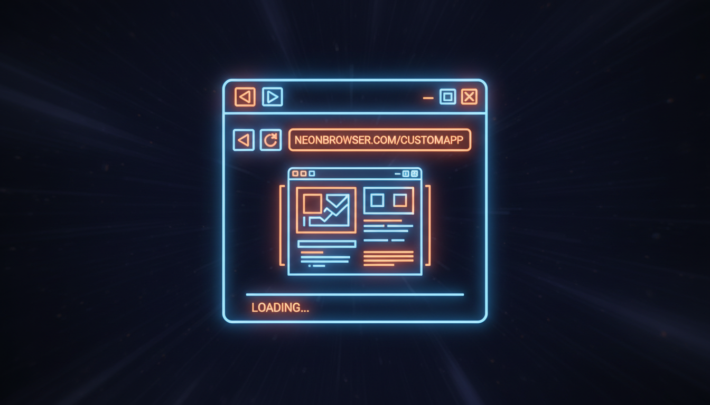

Власний браузер з адресним рядком, навігацією

public ref class BrowserForm : public Form {
private:
AxWMPLib::AxWindowsMediaPlayer^ wmp; // або WebView2
TextBox^ txtUrl;
Button^ btnGo, ^btnBack, ^btnForward, ^btnRefresh, ^btnHome;
ProgressBar^ progress;
TabControl^ tabs;
public:
BrowserForm() {
this->Text = "Neon Browser";
this->Size = Size(1200, 800);
// Панель навігації
Panel^ navPanel = gcnew Panel();
navPanel->Dock = DockStyle::Top;
navPanel->Height = 40;
navPanel->BackColor = Color::FromArgb(30, 30, 50);
btnBack = CreateNavButton("◀", 5);
btnForward = CreateNavButton("▶", 35);
btnRefresh = CreateNavButton("↻", 65);
btnHome = CreateNavButton("🏠", 95);
txtUrl = gcnew TextBox();
txtUrl->Location = Point(130, 8);
txtUrl->Size = Size(800, 25);
txtUrl->Text = "https://www.google.com";
btnGo = gcnew Button();
btnGo->Text = "Go";
btnGo->Location = Point(940, 8);
btnGo->Click += gcnew EventHandler(this, &BrowserForm::OnNavigate);
navPanel->Controls->Add(btnBack);
navPanel->Controls->Add(btnForward);
navPanel->Controls->Add(btnRefresh);
navPanel->Controls->Add(btnHome);
navPanel->Controls->Add(txtUrl);
navPanel->Controls->Add(btnGo);
this->Controls->Add(navPanel);
// Вкладки
tabs = gcnew TabControl();
tabs->Dock = DockStyle::Fill;
AddNewTab("https://www.google.com");
this->Controls->Add(tabs);
// Обробники
txtUrl->KeyDown += gcnew KeyEventHandler(
this, &BrowserForm::OnUrlKeyDown);
}
Button^ CreateNavButton(String^ text, int x) {
Button^ btn = gcnew Button();
btn->Text = text;
btn->Location = Point(x, 8);
btn->Size = Size(25, 25);
btn->FlatStyle = FlatStyle::Flat;
return btn;
}
void AddNewTab(String^ url) {
TabPage^ page = gcnew TabPage("Нова вкладка");
WebBrowser^ wb = gcnew WebBrowser();
wb->Dock = DockStyle::Fill;
wb->ScriptErrorsSuppressed = true;
wb->DocumentCompleted += gcnew WebBrowserDocumentCompletedEventHandler(
this, &BrowserForm::OnDocumentCompleted);
wb->Navigating += gcnew WebBrowserNavigatingEventHandler(
this, &BrowserForm::OnNavigating);
wb->Navigate(url);
page->Controls->Add(wb);
tabs->TabPages->Add(page);
}
void OnNavigate(Object^ s, EventArgs^ e) {
WebBrowser^ wb = GetCurrentBrowser();
if (wb != nullptr) wb->Navigate(txtUrl->Text);
}
void OnUrlKeyDown(Object^ s, KeyEventArgs^ e) {
if (e->KeyCode == Keys::Enter) OnNavigate(s, e);
}
WebBrowser^ GetCurrentBrowser() {
if (tabs->SelectedTab == nullptr) return nullptr;
for each(Control^ c in tabs->SelectedTab->Controls) {
if (dynamic_cast<WebBrowser^>(c) != nullptr)
return (WebBrowser^)c;
}
return nullptr;
}
void OnDocumentCompleted(Object^ s, WebBrowserDocumentCompletedEventArgs^ e) {
WebBrowser^ wb = (WebBrowser^)s;
tabs->SelectedTab->Text = wb->DocumentTitle;
if (wb == GetCurrentBrowser()) {
txtUrl->Text = wb->Url->ToString();
}
}
};